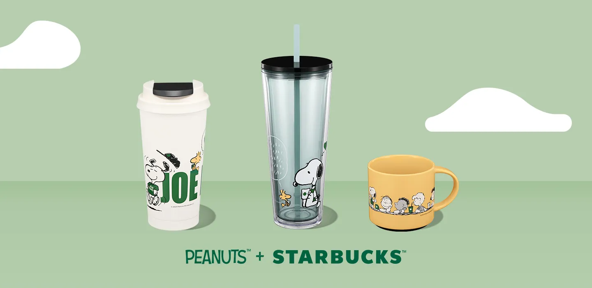

Kindness, community and coffee — a Starbucks-exclusive collaboration with Peanuts, rolled out across Starbucks markets worldwide.

In March 2025, Starbucks and Peanuts launched a global brand partnership built on a simple idea: small acts of kindness ripple outward. The collaboration introduced Joe Kind Snoopy — a Starbucks-exclusive take on the classic Peanuts character — across an exclusive line of merchandise, food and beverages, rolling out to stores across more than 70 countries. The launch was timed to Starbucks' annual Global Month of Good, pairing a playful visual identity with real community-impact programs, including meal donations tied to partner volunteer hours.
As part of the Starbucks Global Account team at TMS, I worked on seasonal merchandise collections and global brand collaborations like this one — turning concept art into production-ready product branding, packaging and presentation files for rollout across EMEA, APAC and the Americas.
4,700+ stores across 39 markets, with an exclusive reusable Joe Kind Snoopy cup, new Frappuccino flavors, and a "Snoopy in Style" pop-up exhibit in Paris featuring a limited-edition Charlie Brownie.
Immersive pop-up stores with 3D characters and Peanuts comics, plus a Joe Kind Snoopy ceramic mug and doghouse tote bag.
Limited-edition merchandise and food across select countries, including signature Peanuts character cookies and collectible gift cards.
Peanuts-inspired baked goods — Snoopy and Charlie Brown macarons in South Korea, Snoopy sugar donuts and waffles in Japan — plus exclusive merch and animated eGift cards.
Mugs, tumblers and cold cups featuring the Peanuts gang, in participating stores across the U.S. and Canada.